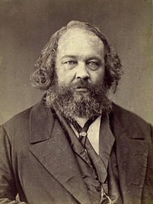
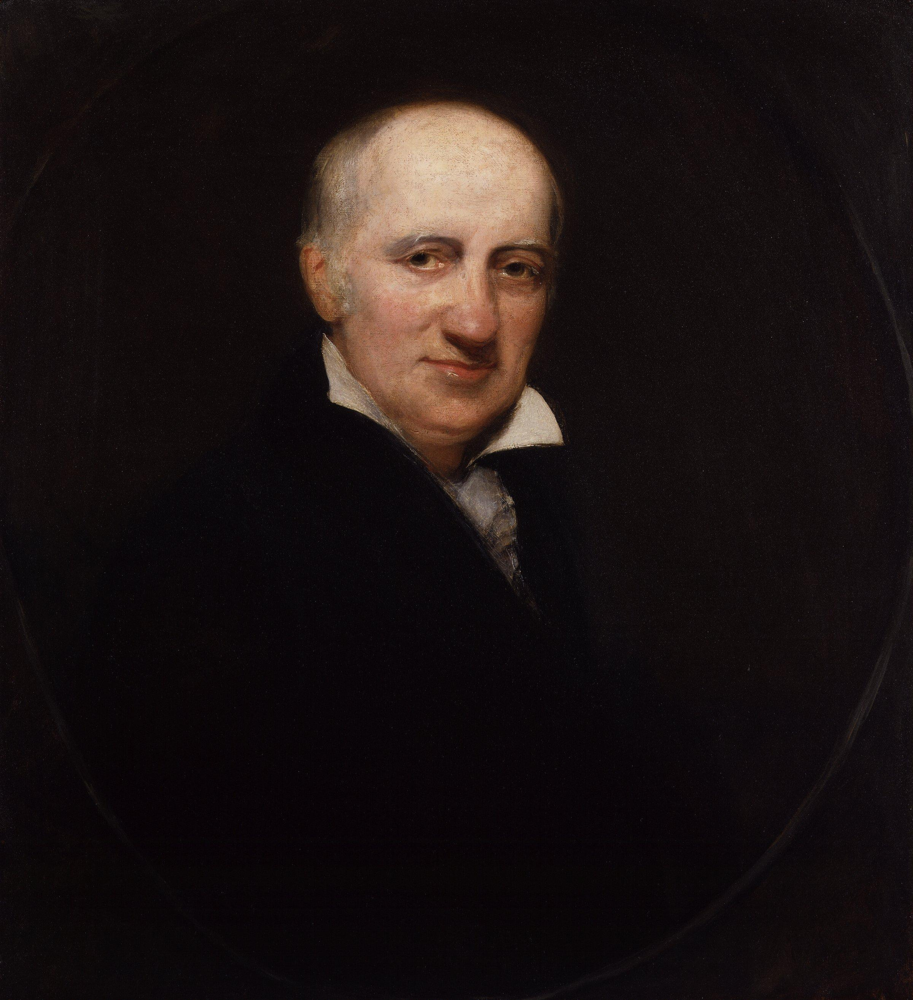
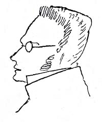

Anarchist School of Thought
Anarchist school of thought is split into 2 main historical traditions. The individualist wing of of anarchy emphasises negative liberty
(opposition to state or social control over the individual) while the social wing of anarchy emphasises positive liberty which argues that
humans have needs that society has to fulfill
Types of Anarchy
Mutualism
 Mutualism began in the 18th century
Englsih and French labour movements. Their form of anarchism was associated with Pierre-Joseph Prudhon. It argues for Mutualist anarchism is
concerned with reciprocity, free association, voluntary contract, federation and credit andcurrency reform. Many mutualists believe a market
without government intervention drives prices down to labor-costs, eliminating profit,rent and interest according to the labor theory of value.
Firms would be forced to compete over workers just as workers compete over firms, raising wages.
Mutualism began in the 18th century
Englsih and French labour movements. Their form of anarchism was associated with Pierre-Joseph Prudhon. It argues for Mutualist anarchism is
concerned with reciprocity, free association, voluntary contract, federation and credit andcurrency reform. Many mutualists believe a market
without government intervention drives prices down to labor-costs, eliminating profit,rent and interest according to the labor theory of value.
Firms would be forced to compete over workers just as workers compete over firms, raising wages.
Collectivist Anarchism
Collectivist anarchism is a form of anarchism
most commonly associated with Mikhail Bakunin. The difference between Collectivist anarchism and Mutualism is that collectivist anarchists oppose
all private ownership of the means of production, instead they advocate for ownership to be collectivized. This movement was initiated by a small
cohesive group that committed acts of violence. The violence would inspire the worker to revolt and forcibly collectivized the means of production.
Instead, workers would be rewarded for their work with the basis on how much time they contributed to the production, rather than goods distributed
in according to need in Anarcho-communism. Despite the collectivist anarchists advocating for compensation of labour, some offered a possibility of
a post-revolutionary transition to a communist system and distribute to people according to need. Collectivist anarchy rose with Marxism, however it
opposed the dictatorship of the proletariat despite both striving for the same goal; a collectivist stateless society. There are some anarchists that
don’t oppose the use of currency. Although collectivist anarchism shares many similarities with anarcho-communism, there are also key differences
between them. Collectivist anarchists believe that the economy and all property should be collectively owned by society, while anarchist communists
think that the concept of ownership should be replaced with the concept of usage. Also, collective anarchists prefer using a form of currency to
compensate the workers according to the amount of time they spent working. While anarchist communists believe that all forms of currency and wages
should be abolished all together and instead goods should be distributed “to each according to his or her need”.
Anarcho-communism
Anarcho-communism is a theory of anarchism that advocates for the abolition of the state, markets, money, private property and capitalism. Instead
in favour of common ownership of the means of production and a network of voluntary workers with production and consumption established on a guiding
principle "From each according to his ability, to each according to his need". Some forms of anarchy are derived and strongly influenced from
egoism and radical individualism. It developed after the French Revolution from radical socialist currents, but it was first formed as it is in the
Italian section of the First International.
Philosophical Anarchism
Philosophical Anarchism disputes that the state
lacks moral legitimacy; that there is no individual obligation or duty to obey the state and conversely, the state has no right to command its citizens.
However, this is different than other forms of anarchy in that it does not advocate for the abolition of the state. Philosophical anarchists may accept
the existence of a minimal state as a “necessary evil”, but it argues that citizens do not have a moral obligation to obey the state when the laws conflict
with individual autonomy. Most people would consider William Godwin as the founder of Philosophical anarchism. He developed what most would consider the
first expression of modern anarchist thought. He conceived that people should act in their own accordance and with their own judgements and allow anyone
else with the same liberty. Philosophical anarchists opposed to the immediate take down of the government through violence means out of concern that it
would be left insecure against an even more harmful or oppressive state which they consider counter-productive.
Egoist Anarchism
An influence form of individualist anarchism called egoism
or egoist anarchism, was expounded by the German Max Stirner. His text "The Ego and its Own '' published in 1844 was very important in the founding of
philosophy. Stirner was critical about capitalism because it created class warfare, where the rich would exploit the lower class by using the state as
their tool. He also rejected religion, communism and liberalism because he saw them as a subordinate to god, a collective and the state respectively.
According to Stirner, the only limitations of the rights of the individual was their ability to obtain whatever they desired with regard to god, morality
or the state. Egoist anarchists argue that egoism makes a genuine and spontaneous union between individuals. Stirner wanted to have an individual rebellion
that did not seek to establish new institutions or anything that resemble a state.